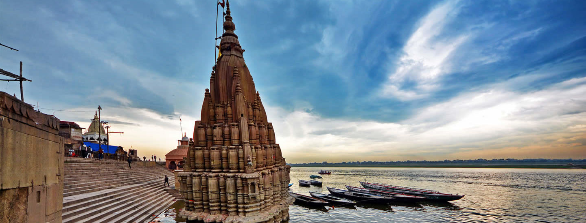
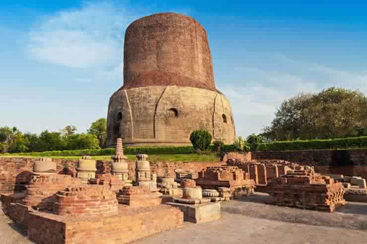
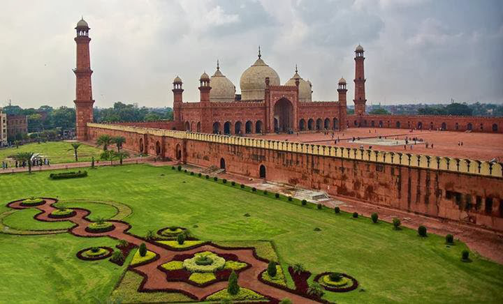
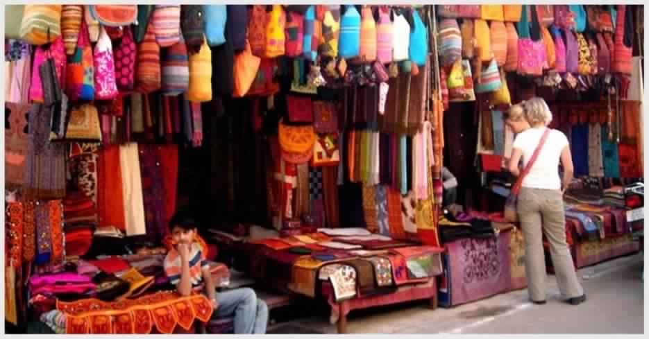

Kashi Vishwanath temple is an important temple located in Varanasi. It is a famous shrine dedicated to Lord Shiva, Hindu God. It is one of the 12 holiest Shiva temples termed as jyotrilingas. Varanasi is also called as Kashi and Shiva is considered as the ruler of the universe. Vishwanath refers to the term ruler of the universe.The temple will be at prime beauty throughout the year. Winter (October – March) has a pleasant climate which makes sightseeing easier. The rituals starts early by 3 am in the morning. The second ritual starts by 11:15 am. In the evening, rituals starts at 7 pm, 9 pm and 10:30 pm. The temple closes by 11 in the night.


The Chunar fort is situated in the Vindhya Range at a distance of about 45 odd km from Varanasi. The Chunar fort is located in the Mirzapur district. According to the Puranas the oldest name of Chunar was Charanadri as Lord Vishnu had taken his first step in his Vaman incarnation in the dynasty of Great king Bali. However Chunar came into prominence after the visit of Babar followed by Shershah Suri, Humayun, Akbar, Aurangzeb and finally the Britishers.
It is said that Maharaja Vikramaditya, the king of Ujjain established the fort of Chunar. According to the Alha Khand, King Sahadeo made this fort as his capital and established the statue of Naina Yogini in a cave of Vindhya hill. To commemorate his victory on 52 rulers, King Sahadeo built a stone umbrella inside the fort.
The Alamgir Mosque enjoys an enviable location. Flanked by the sacred River Ganges, it overlooks the Panchganga Ghat. The masjid manifests impressive architectural skills. It is a fine example of what can be achieved if Hindu and Mughal styles of architecture are beautifully blended. The Hindu effect is more noticeable in the lower portions of the mosque and the enclosure walls whereas in the rest of the mosque the Muslim effect is far more conspicuous.
When you are out on a sight seeing trip to visit the various Tourist Attractions in Varanasi, make sure that the Alamgir Mosque is included. It is undisputedly a fine edifice that makes a mark in the minds of all onlookers. The domes, the turrets, the pillars are all reflective of the remarkable dexterity of Indian craftsmen. One should not miss out an opportunity to witness this commanding structure in Uttar Pradesh, India.


Godowlia Market is the oldest and most loved market for its variety of goods and its privilege to offer wholesale to retail goods. The archaic and dilapidated buildings posing a threat to innovation are the recognition of the market. The market is nearly 3kms from Varanasi Cantt Railway Station and could be reached within 10 minutes by rickshaw. Godowlia Market is Located in Maheshpur, Godowlia is the Central Business District (CBD) of Varanasi.